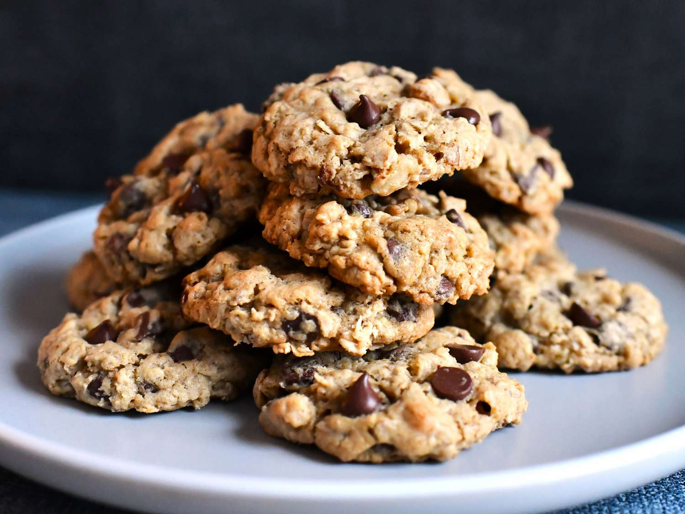

Oatmeal Chocolate Chip Cookies

Ingredients
- 1x large egg
- 1⁄2 cup butter (1 stick)
- 1⁄2 cup light brown sugar
- 1⁄4 cup white sugar
- 1 Tablespoon vanilla extract
- 11⁄2 cup whole oats
- 3⁄4 cup flour
- 1⁄2 to 1 teaspoon cinnamon
- 1⁄2 teaspoon baking soda
- 1⁄2 to 1 cup chocolate chips
- pinch of salt
Cooking Steps
- Preheat the oven to 350°F and spray a baking sheet
- Beat together the egg, butter, sugars, and vanilla on medium-high, about 4 minutes, until creamed
- Slowly add the oats, flour, cinnamon, salt, and baking soda. Beat on low until just mixed.
- Mix in chocolate chips
- Roll dough in to lil' balls
- Refrigerate at least 2 hours (but if you are busy you can refrigerate up to 5 days)
- Bake ~14 minutes for medium sized cookies
Cookies firm up as they cool
Enjoy!